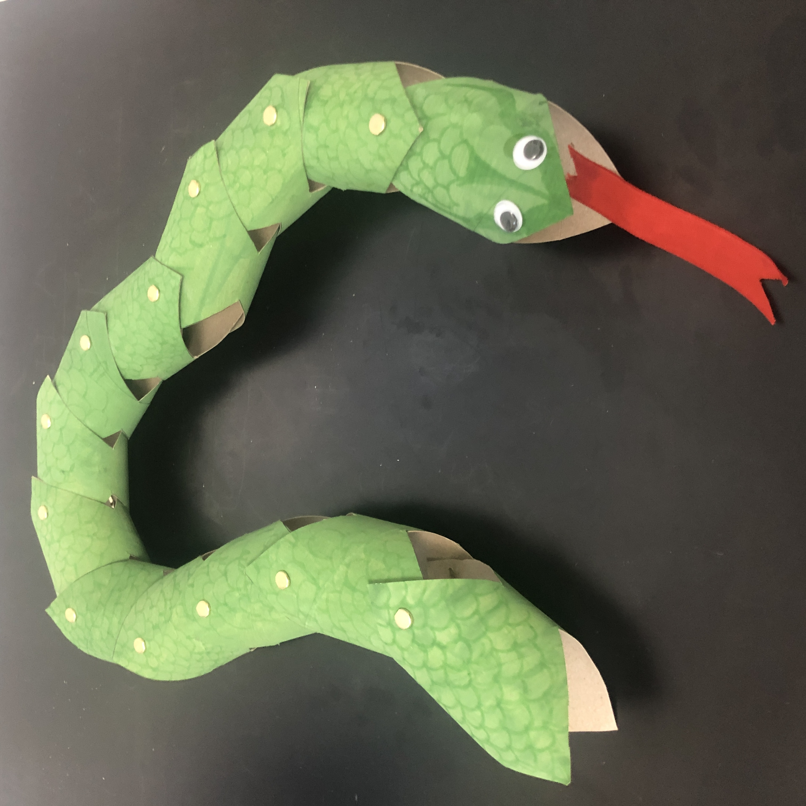

You'll need:
- Toilet Tissue Rolls
- Green or Yellow Paint
- Felt Tip Pens
- Scissors
- Paper Fasteners
- Googly Eyes
- Satin Ribbon
- PVA Glue
How to make a bendy snake.
- Take some Toilet Tissue Rolls and paint them Green or Yellow.
- Draw some scales on the bendy snake Felt Tip Pens.
- This is an optional step, where you can cut your bendy snake symmetrically.
- Attach paper fasteners on the bendy snake.
- Stick the Googly Eyes and the Satin Ribbon as a tongue.
And your Bendy Snake is ready to scare others!
|

|